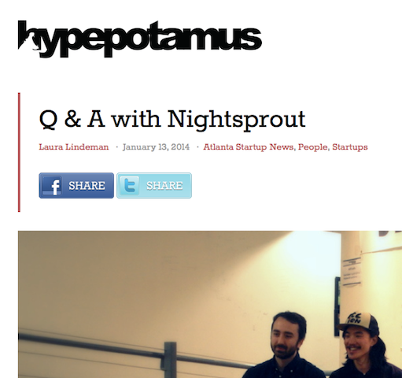

Laura Lindeman

Nice to meet you!
I'm interested in pursuing a career in social media because I believe in the power of online communities. I use several social networking utilities personally and have become increasingly involved with creating online content in both my day job and my after-work hours. A few of my recent efforts are highlighted here. Please click any of the images to view the full site mentioned!
Read my blog at:

Connect with me!


Hosted on GitHub Pages — Theme by orderedlist
@BCMAtlanta
I currently curate the Twitter account for Buckhead Christian Ministry, a local non-profit. We have 614 followers, up from ~500 when I began the job.

Fundraising Campaigns
Specifically, I recently crafted the copy for our "12 Days of Christmas" fundraising campaign. It was our first campaign of the sort, so all analytics from this year will serve as a baseline to gauge future success.

I also created my organization's profile for Georgia Gives Day, a statewide fundraising event. We raised over $30,000 that day through strategically timed emails, tweets, and Facebook posts.

Online Content
I write posts that highlight local tech startups and entrepeneurs for Hypepotamus, a Midtown-based open source business development engine. My work appears on Hypepotamus.com and is syndicated on the AJC's Tech Biz blog.
I've had two guest posts featured on MoneySavingMom.com, a personal finance blog averaging over four million pageviews and over a million unique visitors each month.

As a contributor to Curbed Atlanta, I wrote articles about events and topics relevant to intown living.